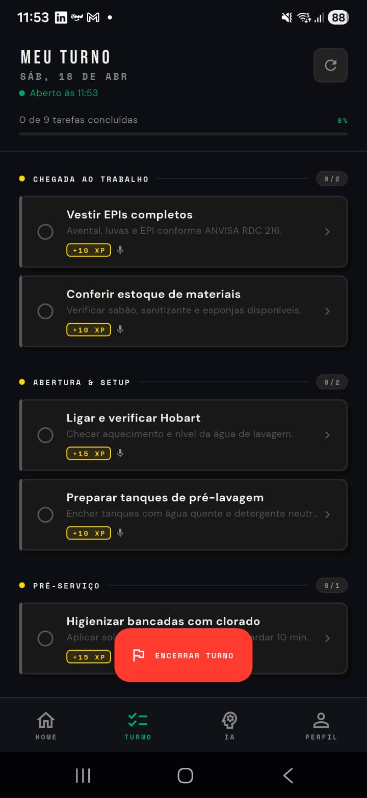
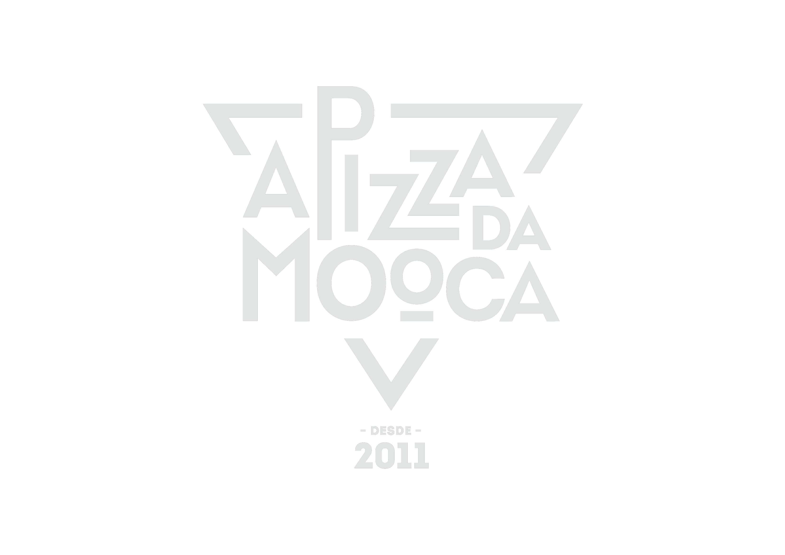
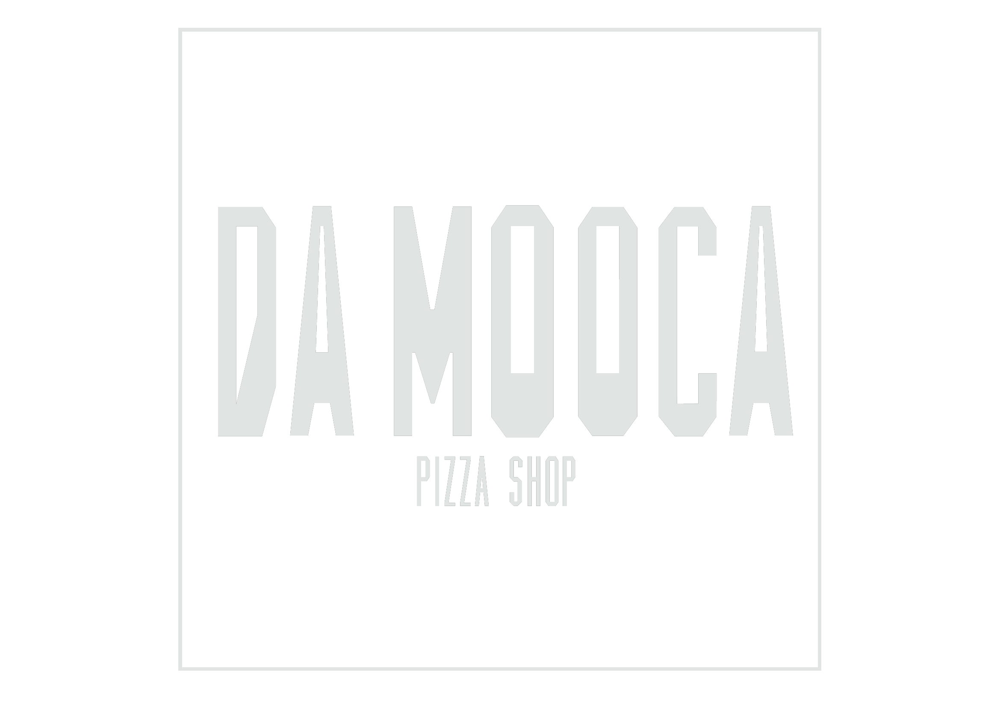

empresário
ato 1 · a dor
Faltou gente.
Em horas, o profissional certo chega orientado, com tarefas claras e pagamento já resolvido. Sua operação não para.

Para o empresário que cansou de ouvir "não vou poder ir hoje".
Para o profissional que quer escolher seu turno e levar mais pra casa.
"Você já passou por isso?"
A noite cheia, o garçom liga avisando que não vem. O grupo da gerência vira leilão de plantão. Você acaba pagando hora extra, dobrando turno, e ainda assim alguém sai chateado.
A CLT foi feita pra escala fixa. Mas hospitality não tem escala fixa.
A TURNI. é a infraestrutura que cobre a escala que muda. Sem hora extra. Sem WhatsApp. Sem pagar 50% de agência.
"Você já pensou nisso?"
Você está há anos trabalhando em hospitality. Conhece a casa, a cozinha, o cliente. Mas no fim do mês o líquido é o mesmo, a folga é a mesma, e você não decide nada.
Existe um caminho diferente. Você pode escolher os turnos, o lugar, o horário. E levar mais pra casa do que a CLT te paga.
A TURNI. é a plataforma onde profissional de hospitality vende turnos com autonomia. Você decide.
Em horas, o profissional certo chega orientado, com tarefas claras e pagamento já resolvido. Sua operação não para.
Faltou garçom na sexta? Chef não apareceu? Em até 2 horas a TURNI. conecta você ao profissional certo, com briefing e check-in digital.
A TURNI. não terceiriza ilegalmente. Ela documenta. Trilha de auditoria, aceite eletrônico e controle de frequência protegem você.
Defina o checklist da operação uma vez. Cada profissional acessa as tarefas via token do turno: sequência, tempo, confirmação.
Comece gratuitamente. Sem contrato. Primeiro plantão resolvido em até 2 horas. Só pague quando o profissional chegar e fizer check-in.
Trabalhe quando quiser. Construa sua reputação. Receba via Pix em 24h. A plataforma que transforma seu talento em escolha real.
Sem CLT obrigatória. Sem horário fixo. Sem depender de um lugar único. Conecte-se às melhores operações, quando e onde quiser.
Cada turno tem roteiro: o que fazer, em que ordem, em quanto tempo. Você chega orientado, executa com confiança, sai com avaliação subindo.
Veja quanto pode ganhar antes de aceitar qualquer plantão. R$ 1.440/mês com 3 turnos por semana. Quanto mais trabalha, maior seu score.
O ecossistema TURNI. tem centenas de profissionais. Com turni ads você aparece no topo das buscas e preenche sua agenda antes dos outros.
A TURNI. é uma plataforma de workforce on-demand para hospitality. Bares, restaurantes, hotéis, catering, eventos. Conecta contratantes que precisam de pessoas qualificadas com profissionais que querem mais autonomia.
Nasceu dentro do Grupo Noiz, validada em 5 operações reais ao vivo, antes de abrir para o mercado. Pizza da Mooca, 7ª melhor pizzaria do Brasil, foi a primeira a turnificar.
A camada de produto é construída sobre o Future Hospitality Platform (FHP), ecossistema tecnológico que organiza tanto equipes CLT quanto profissionais TURNI.. Pagamentos integrados via Pagar.me. Parceria estratégica com Stone desde o MVP.
Não somos uma agência. Não somos um app de WhatsApp turbinado. Não somos uma maquiagem da CLT.
Somos a infraestrutura que faltava para o food service brasileiro encontrar gente qualificada em horas, com checklist pronto, match por IA, PIN bilateral de check-in, Pix em 15 minutos e governança documentada.
Para o profissional, somos a plataforma que transforma talento em escolha real. Sua agenda. Seu preço. Sua reputação. Seu cartão TURNI.. Seu plano de saúde. Seu HUB físico no Itaim.
Acreditamos que turno não combina com improviso. Que profissional de food service não precisa escolher entre liberdade e dignidade. Que dono de bar não precisa resolver falta de gente no grito da sexta à noite.
Acreditamos que tecnologia serve para aproximar quem precisa de quem pode. Que todo turno tem um roteiro. Que Pix em 15 minutos é respeito. Que cartão de saúde para profissional autônomo é dignidade. Que um HUB físico no Itaim é cuidado real.
A TURNI. existe pra ser o ponto de encontro.
A TURNI. é um ponto de encontro. Cada lado tem sua jornada. Posicione-se. E a partir daqui a landing fala só com você.
Sem agência. Sem WhatsApp improvisado. Sem surpresa no fim da noite. A TURNI. conecta você ao profissional qualificado com checklist pronto, match por IA e pagamento integrado.
A TURNI. é uma workforce platform on-demand para hospitality. Em uma única ferramenta você publica o turno, recebe candidatos qualificados via match IA, valida o check-in com PIN bilateral e paga via Pix com split automático.
Tudo conectado ao Pagar.me. A pré-autorização fica ativa no aceite, débito real só quando o profissional faz check-in. Sem WhatsApp, sem agência, sem CLT improvisada.
Faltou garçom na sexta? Chef não apareceu? Evento chegando? Em até 2 horas a TURNI. conecta você ao profissional certo, com briefing, tarefas definidas e check-in digital. Sua operação não trava.
Os 4 cenários típicos onde a TURNI. cobre, sem precisar de headcount fixo, sem custo de agência, sem risco trabalhista de CLT pra um turno só.
A TURNI. não terceiriza ilegalmente. Ela documenta. Cada alocação tem trilha de auditoria, aceite eletrônico e controle automático de frequência para proteger você e o profissional.
* A TURNI. não promete blindagem trabalhista, entrega governança documentada. Recomendamos sempre assessoria jurídica para casos específicos.
Defina o checklist da sua operação uma vez. A partir daí, cada profissional que chega acessa as tarefas via token do turno, com sequência, tempo estimado e confirmação de execução.
A camada de checklist é construída sobre o core FHP, ou Future Hospitality Platform. O mesmo motor que organiza equipes CLT orienta profissionais TURNI..
Comece gratuitamente. Quando precisar de mais cultura, prioridade e analytics, evolua sob demanda.
Cadastre seu estabelecimento e publique turnos agora. Match IA com a base de profissionais, sem custo.
Para operações que querem cultura própria, checklist personalizado e os melhores profissionais com prioridade.
Para grupos e redes. Gestão centralizada de múltiplas unidades, SLA de match < 1h e integração com seu POS.
Comece gratuitamente. Sem contrato. Só pague quando o profissional chegar e fizer check-in.
Cadastrar estabelecimentoSem CLT obrigatória. Sem horário fixo. Sem depender de um único lugar. A TURNI. conecta você às melhores operações de food service e hospitalidade. Quando e onde você quiser trabalhar.
Você decide quando trabalhar, onde trabalhar e por quanto. Sem CLT obrigatória, sem patrão fixo, sem perder o turno do filho na escola.
Cadastro com MEI, contrato B2B PJ↔PJ, score público que sobe com cada bom turno. Você constrói sua reputação enquanto ganha, e os melhores estabelecimentos te chamam primeiro.
A TURNI. é simples por escolha. Cadastro inicial, escolha do turno e check-in com PIN. O resto a plataforma cuida.
Sem entrevistas longas. Sem agência cobrando porcentagem. Sem WhatsApp confuso. Você decide o turno, faz e recebe.
Cada turno tem um roteiro: o que fazer, em que ordem, em quanto tempo. Você chega orientado, executa com confiança, sai com a avaliação subindo.
O checklist é montado pelo estabelecimento e versionado no Core FHP, então mesmo na primeira vez naquele lugar, você atua como se já trabalhasse lá há meses.
Veja quanto você pode ganhar antes de aceitar qualquer plantão. Quanto mais você trabalha, maior seu score. Quanto maior seu score, melhores os plantões disponíveis.
Sem patrão. Sem horário fixo. Sem teto invisível. Você é seu próprio gerente de carreira. A TURNI. só dá a infraestrutura.
Ajuste os parâmetros abaixo conforme sua função, quantos turnos pretende vender no mês e o valor médio que costuma cobrar. O cálculo atualiza em tempo real.
Cálculo simulado · base MEI 2026 (DAS-MEI R$75/mês como reserva fixa, valor varia conforme atividade) · não considera deduções específicas, gorjetas ou benefícios extras (cartão TURNI., plano médico, HUB) · resultado é estimativa orientativa, não substitui orientação contábil ou trabalhista individual.
A TURNI. nasceu dentro do Future Hospitality Platform (FHP), ecossistema do Grupo Noiz, com operação real em 5 estabelecimentos ao vivo. A Pizza da Mooca, 7ª melhor pizzaria do Brasil, está entre eles.
Você não é só mais um app. É parte de uma comunidade que move centenas de operações por mês, com mentoria, treinamentos, benefícios reais e prioridade dentro do FHP para os melhores TURNI..
O TURNI. HUB fica na região do Itaim Bibi, em São Paulo, e é exclusivo para membros do Plano TURNIficado. Quando você decide fazer mais de um turno no mesmo dia ou pegar uma operação à noite depois de outra à tarde, não precisa voltar pra casa, encarar trânsito nem se preocupar com mobilidade.
No HUB você encontra vestiário, chuveiro, lounge para descanso, área de trabalho e café cortesia. É a base operacional do profissional TURNI. que quer rodar no centro expandido sem perder tempo no caminho.
O cadastro TURNI. é gratuito para sempre. Quando quiser acelerar seu volume de plantões, ative o TURNI. Ads. E quando estiver rodando seu mês inteiro com TURNI., vire TURNIficado e ganhe benefícios que normalmente só vêm com CLT.
Aparece na fila padrão de match. Quanto maior seu score, mais visibilidade natural.
Seu perfil aparece no topo das buscas dos restaurantes. Mais visibilidade, mais plantões, mais renda.
Para quem está rodando o mês inteiro com TURNI. e quer benefícios que normalmente só vêm com carteira assinada. Saúde, dente, cartão e base física no Itaim.
* TURNI. Ads aumenta sua visibilidade no algoritmo de match, sem garantia de quantidade de plantões. Plano Médico e Odontológico operados por parceiros credenciados, regras e carências aplicáveis.
Cadastro em 3 minutos. MEI · contrato B2B PJ↔PJ · primeiro plantão pode ser ainda essa semana.
Começar a trabalharA TURNI. nasceu rodando dentro do Grupo Noiz, com operação real validada antes de abrir para o mercado. Os estabelecimentos abaixo já contratam profissionais TURNI. todo mês.


Cada turno fechado, cada profissional cadastrado, cada estabelecimento aderindo ao ecossistema. A TURNI. é um movimento. Veja a rede crescer agora.
Deixe seu e-mail e a gente te envia acesso antecipado. Ou clique acima para entrar direto na demo navegável.